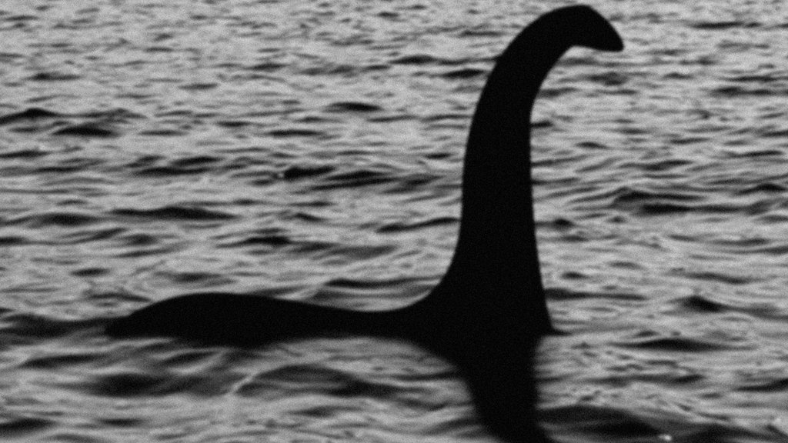

Who is Nessie?
- Sightings have often described the monster as a sea serpent. A large creature with a long neck and multiple
humps that appear over the water.
- Since the 1940s, many have begun calling the creature Nessie.
Sightings
- The first recorded sighting of Nessie was by a Christian monk in August 565. This makes Nessie one of the
oldest unidentified creatures.
- Interest in the mythical creature was revived in 1933 when a group claimed to have seen the beast.
-
In 1934 the Surgeon's Photograph was released that remains to this day the most famous photograph of the
creature. However, nearly 60 years later in 1994, the photo was revealed to be a hoax by someone involved in
its creation.
Potential Suspects
- Plesiosaur - Some believe that Nessie is a Plesiosaur, a marine reptile that would have first appeared in
the Triassic period. Though this species went extinct with the dinosaurs, this theory still has its
proponents.
- Giant Eel - A much more plausible theory is that Nessie sightings have been of giant eels that lives in the
loch. Regular eels actually do live in Loch Ness, however these Eels are nothing near the sizes reported by
sightings.
-
Elephant - Surprisingly the most plausible theory for Nessie being an animal is that of an elephant. A small
herd of circus elephants actually resided near the lake in the 1930s after the initial sighting. It is
possible that subsequent sightings were of these elephants swimming in the loch.

https://www.bbc.com/news/uk-scotland-highlands-islands-49419989